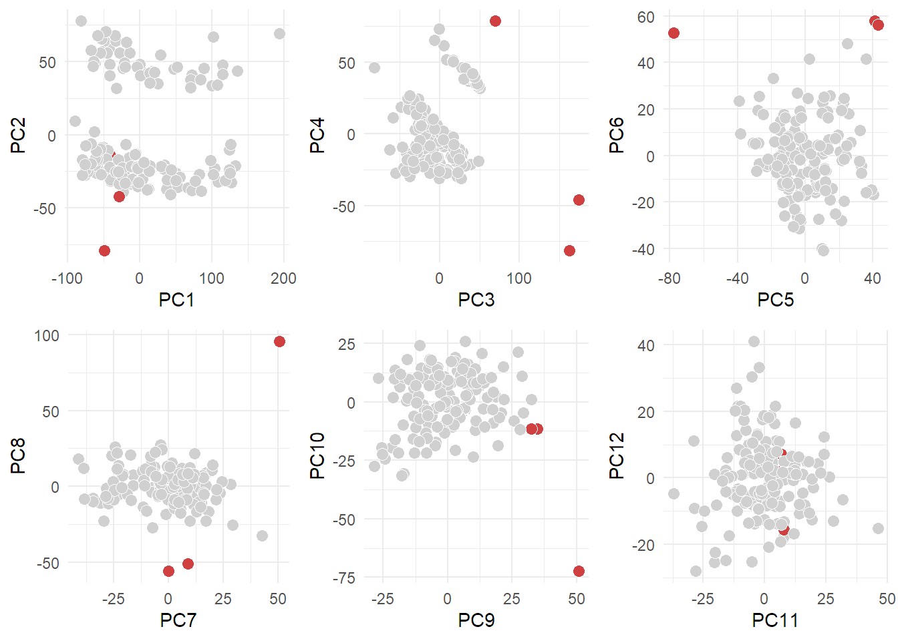
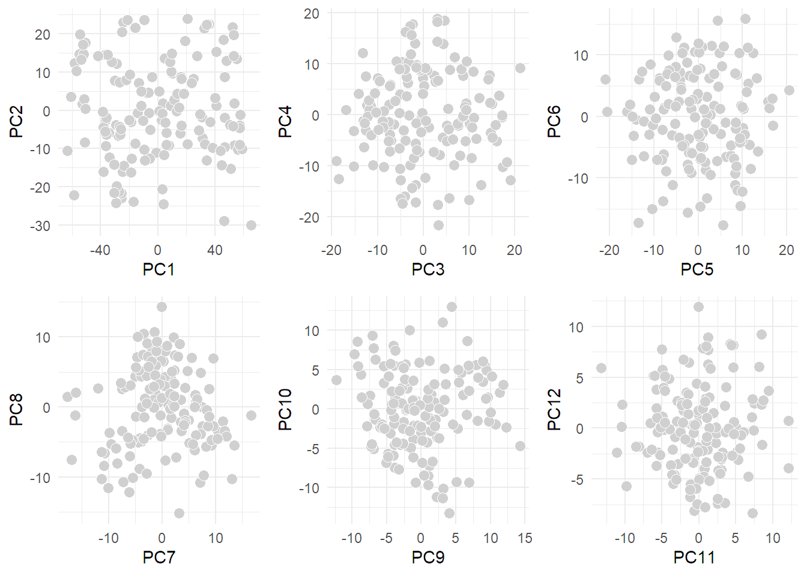
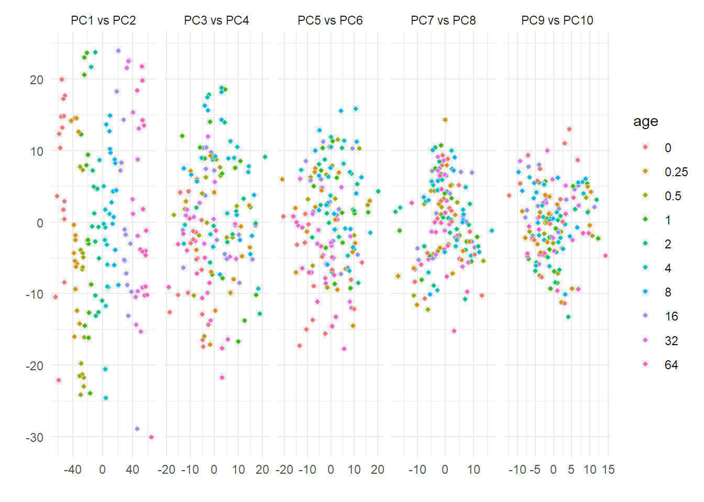
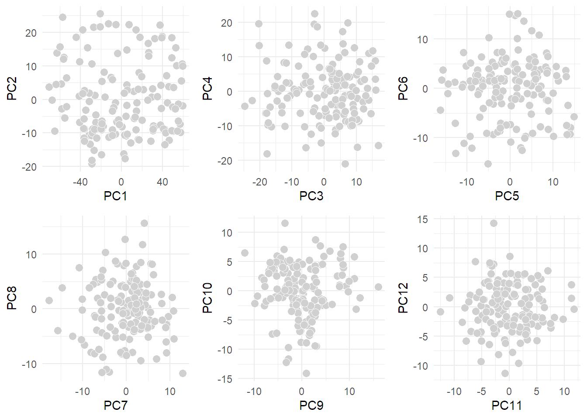
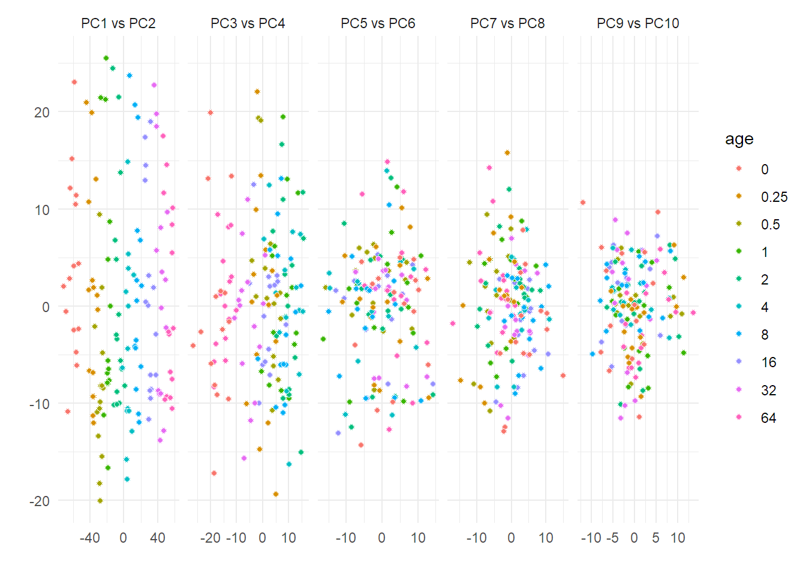

models_tests
Marc
25/2/2022
Last updated: 2022-03-25
Checks: 6 1
Knit directory: workflowr/data/
This reproducible R Markdown analysis was created with workflowr (version 1.7.0). The Checks tab describes the reproducibility checks that were applied when the results were created. The Past versions tab lists the development history.
Great! Since the R Markdown file has been committed to the Git repository, you know the exact version of the code that produced these results.
Great job! The global environment was empty. Objects defined in the global environment can affect the analysis in your R Markdown file in unknown ways. For reproduciblity it’s best to always run the code in an empty environment.
The command set.seed(20220214) was run prior to running the code in the R Markdown file. Setting a seed ensures that any results that rely on randomness, e.g. subsampling or permutations, are reproducible.
Great job! Recording the operating system, R version, and package versions is critical for reproducibility.
Nice! There were no cached chunks for this analysis, so you can be confident that you successfully produced the results during this run.
Using absolute paths to the files within your workflowr project makes it difficult for you and others to run your code on a different machine. Change the absolute path(s) below to the suggested relative path(s) to make your code more reproducible.
| absolute | relative |
|---|---|
| C:/Users/mysit/Documents/Bioinformatica/Semestre_4/workflowr/data | . |
Great! You are using Git for version control. Tracking code development and connecting the code version to the results is critical for reproducibility.
The results in this page were generated with repository version c026601. See the Past versions tab to see a history of the changes made to the R Markdown and HTML files.
Note that you need to be careful to ensure that all relevant files for the analysis have been committed to Git prior to generating the results (you can use wflow_publish or wflow_git_commit). workflowr only checks the R Markdown file, but you know if there are other scripts or data files that it depends on. Below is the status of the Git repository when the results were generated:
Ignored files:
Ignored: .Rhistory
Ignored: .Rproj.user/
Ignored: analysis/preprocessing_thesis_cache/
Ignored: data/Demo for WaveICA/
Untracked files:
Untracked: data/.Rprofile
Untracked: data/.gitignore
Untracked: data/TraceAge_bloodspots_t3_neg_clean.csv
Untracked: data/TraceAge_bloodspots_t3_pos_clean.csv
Untracked: data/bn_after_norm.rds
Untracked: data/bn_before_norm.rds
Untracked: data/bn_means.rds
Untracked: data/bn_test.rds
Untracked: data/combat_model.rds
Untracked: data/data_for_BN.RData
Untracked: data/mdf.rds
Untracked: data/mdf_processed.rds
Untracked: data/model_tests.rds
Untracked: data/models.RData
Untracked: data/models_waveICA2.0.RData
Untracked: data/packrat/
Untracked: data/sample_order_traceage_wp2_sample_overview.xlsx
Untracked: data/waveICA_models.rds
Untracked: models.RData
Note that any generated files, e.g. HTML, png, CSS, etc., are not included in this status report because it is ok for generated content to have uncommitted changes.
These are the previous versions of the repository in which changes were made to the R Markdown (analysis/models_tests.Rmd) and HTML (docs/models_tests.html) files. If you’ve configured a remote Git repository (see ?wflow_git_remote), click on the hyperlinks in the table below to view the files as they were in that past version.
| File | Version | Author | Date | Message |
|---|---|---|---|---|
| Rmd | c026601 | marcsole96 | 2022-03-25 | Lots of things done |
| html | 80b7a6e | marcsole96 | 2022-03-19 | Build site. |
| Rmd | a24a9d1 | marcsole96 | 2022-03-19 | many things but nothing important done |
| html | 243f674 | marcsole96 | 2022-03-19 | Build site. |
| Rmd | c72e31c | marcsole96 | 2022-03-19 | many things changed |
| html | 15ca4e0 | marcsole96 | 2022-03-14 | Build site. |
| Rmd | 9f64fe2 | marcsole96 | 2022-03-14 | please work |
| html | be65065 | marcsole96 | 2022-03-14 | Build site. |
| Rmd | 2947ad7 | marcsole96 | 2022-03-14 | things done |
| html | 1ef6897 | marcsole96 | 2022-03-09 | Build site. |
| Rmd | 1b719f2 | marcsole96 | 2022-03-09 | more stuff |
| html | 32ce8b1 | marcsole96 | 2022-03-08 | Build site. |
| Rmd | a928947 | marcsole96 | 2022-03-08 | tests done |
| html | ef05c20 | marcsole96 | 2022-03-07 | Build site. |
| Rmd | 5b89794 | marcsole96 | 2022-03-07 | added og method |
| html | 2eab8bc | marcsole96 | 2022-03-07 | Build site. |
| Rmd | eca44e8 | marcsole96 | 2022-03-07 | more plots |
| html | 0ff1bd0 | marcsole96 | 2022-03-05 | Build site. |
| Rmd | f92b56c | marcsole96 | 2022-03-05 | played with models |
| html | 1d9c725 | marcsole96 | 2022-03-01 | Build site. |
| Rmd | 27e1b93 | marcsole96 | 2022-03-01 | many things done |
| html | c1832e0 | marcsole96 | 2022-02-28 | Build site. |
| Rmd | 4bb2b2d | marcsole96 | 2022-02-28 | test |
| html | f7fc4fe | marcsole96 | 2022-02-25 | Build site. |
| Rmd | b6c47cb | marcsole96 | 2022-02-25 | tet |
| html | e73936f | marcsole96 | 2022-02-25 | Build site. |
| Rmd | e5bedbe | marcsole96 | 2022-02-25 | models |
Libraries
plot_pca <- function(tmp1, tmp2, color_label, ranks = 10){
tmp3 <- prcomp(tmp2, center = T, scale. = T, rank. = ranks)
pdata <-
tmp3$x %>%
as_tibble() %>%
bind_cols(tmp1 %>% select(all_of(color_label)) %>% mutate_all(as.factor)) %>%
pivot_longer(cols = seq(1, ncol(.)-length(color_label), by=2)) %>%
select(x_val = value, x_name = name, everything()) %>%
pivot_longer(cols = starts_with("PC")) %>%
select(x_name, y_name = name,x_val, y_val = value, everything()) %>%
mutate(name = paste(x_name, "vs", y_name),
name = factor(name, levels = sort(name) %>% unique())) %>%
filter(as.numeric(gsub("PC", "", x_name)) + 1 == as.numeric(gsub("PC", "", y_name)))
pca_plot <- pdata %>%
ggplot(aes(x=x_val, y=y_val))+
geom_point(aes_string(fill = color_label), shape = 21, color = "white")+
facet_grid(~name, scales = "free")+
labs(x = "", y = "")+
NULL
return(pca_plot)
}Data loading
WD <- getwd()
if(WD!="C:/Users/mysit/Documents/Bioinformatica/Semestre_4/workflowr/data"){
setwd("../workflowr/data")
}
#mdf <- read_csv("TraceAge_bloodspots_t3_pos_clean.csv")
mdf <- read_rds(file = "mdf.rds")
#Making a waaay smaller df
#mdf <- mdf[1:255]
#mdf<-mdf %>% gather(key="mz",value="values",6:ncol(mdf)) %>% spread(mz,values)Simplest model ever
No transformation or BN is performed in this data
PCAs for data visualization
pca_df<-mdf %>% filter(type=="sample")
pr.out <- prcomp(pca_df[,6:(ncol(mdf))], scale. = TRUE)Scree Plot
var_explained_df <- data.frame(PC= as.numeric(paste0(1:150)),
var_explained=(pr.out$sdev)^2/sum((pr.out$sdev)^2))
var_explained_df %>%
ggplot(aes(x=PC,y=var_explained, group=1))+
geom_point()+
geom_line()+
labs(title="Scree plot: PCA on scaled data")
var_explained_df %>%
ggplot(aes(x=PC,y=var_explained))+
geom_col()+
labs(title="Scree plot: PCA on scaled data")
sum(var_explained_df$var_explained[1:11])[1] 0.6568698Plotting the first 12 PCs since they explain ~65% of the data
p1<-autoplot(pr.out, data = pca_df, colour = 'age', shape="batch", size=2, x = 1, y =2)
p2<-autoplot(pr.out, data = pca_df, colour = 'age', shape="batch", size=2, x = 3, y =4)
p3<-autoplot(pr.out, data = pca_df, colour = 'age', shape="batch", size=2, x = 5, y =6)
p4<-autoplot(pr.out, data = pca_df, colour = 'age', shape="batch", size=2, x = 7, y =8)
p5<-autoplot(pr.out, data = pca_df, colour = 'age', shape="batch", size=2, x = 9, y =10)
p6<-autoplot(pr.out, data = pca_df, colour = 'age', shape="batch", size=2, x = 11, y =12)
cowplot::plot_grid(p1,p2,p3,p4,p5,p6)
Choosing a good model to make the comparisons and storing the RMSE somehow
The tuneLength doesn’t make the RMSE change much. I will stay with GLMNET and a tunelength of 5.
Identifying the possible outliers
raw <- mdf[6:(ncol(mdf))]
rowinfo <- mdf[0:5]
rowinfo <- tibble::rowid_to_column(rowinfo, "rowid")
tmp1 <- rowinfo %>% filter(type %in% c("sample")) %>% mutate(rowid2 = row_number())
tmp2 <- raw[tmp1$rowid,]
r <- prcomp(x = tmp2, retx = T, center=T, scale. = T, rank. = 12)
bad_rows <- tibble(rowid2=apply(r$x, 2, function(x) {
which(abs(x - median(x)) > (1.5 * quantile(x,0.95)-quantile(x,0.05)))
}) %>%
unlist() %>%
as.vector()) %>%
count(rowid2)
tmp1 <- tmp1 %>%
left_join(bad_rows) %>%
mutate(n=ifelse(is.na(n), 0,n)) %>%
mutate(label=ifelse(n>0, rowid, "")) %>%
{.}Joining, by = "rowid2"pd <- r$x %>%
as_tibble() %>%
bind_cols(tmp1) %>%
{.}
pd <- pd %>%
mutate(response = ifelse(n>0,"Outlier", "Not outlier")) %>%
mutate(response = factor(response))
plotlist <- list()
for(i in 1:(ncol(r$x)/2)) {
xvar <- names(pd)[2*i-1]
yvar <- names(pd)[2*i]
p1 <- ggplot(pd,aes(x=!!ensym(xvar), y=!!ensym(yvar),
fill=response, label=label))+
geom_point(shape=21, color="#FFFFFFFF", size=3) +
scale_fill_manual(values = c("#D0D0D0", "#D04040")) +
theme(legend.position="none") +
NULL
plotlist[[length(plotlist)+1]] <- p1
rm(p1)
}
cowplot::plot_grid(plotlist = plotlist)
Make a Training/Test from the data and try regression on age
training_DF <- mdf %>% filter(type == "sample") %>% select(-sample,-batch,-type,-sample_id)
training_DF[is.na(training_DF)] <- 0
training_x <- training_DF %>% select(-age) %>% as.data.frame()
training_y <- training_DF$ageMaking a simple model and storing the RMSE
results <- data.frame(TrainRMSE = as.numeric(),TrainRsquared = as.numeric(),TrainMAE = as.numeric(),method = as.character(),Name = as.character(),QC = as.character())
trControl <- trainControl(method = "repeatedcv", number = 10, repeats=5, verboseIter = F, savePredictions = TRUE)
A_Input_data <- train(x = training_x,
y = training_y,
method = "glmnet",
tuneLength = 5,
trControl = trControl,
metric = 'RMSE'
)
results[1,] = data.frame(getTrainPerf(A_Input_data), Name = paste0("A_Input_data"), QC = "none")##Getting the RMSE of each repeat: https://stackoverflow.com/questions/56950684/how-to-get-predictions-for-each-fold-in-10-fold-cross-validation-of-the-best-tun/56965881#56965881
Looking at the predictions:
head(A_Input_data$pred) pred obs rowIndex alpha lambda Resample
1 1.856074 0.5 3 0.1 17.75277 Fold01.Rep1
2 1.887135 0.5 4 0.1 17.75277 Fold01.Rep1
3 2.861247 0.5 12 0.1 17.75277 Fold01.Rep1
4 16.040557 16.0 29 0.1 17.75277 Fold01.Rep1
5 2.576586 1.0 34 0.1 17.75277 Fold01.Rep1
6 2.080575 1.0 35 0.1 17.75277 Fold01.Rep1Getting the predictions with the best alpha and lambda
A_Input_data$pred %>%
filter(alpha == A_Input_data$bestTune$alpha & lambda == A_Input_data$bestTune$lambda) %>% head() pred obs rowIndex alpha lambda Resample
1 -0.32494450 0.5 3 0.1 1.775277 Fold01.Rep1
2 0.30224178 0.5 4 0.1 1.775277 Fold01.Rep1
3 2.54070157 0.5 12 0.1 1.775277 Fold01.Rep1
4 15.52370953 16.0 29 0.1 1.775277 Fold01.Rep1
5 1.96676452 1.0 34 0.1 1.775277 Fold01.Rep1
6 -0.02764169 1.0 35 0.1 1.775277 Fold01.Rep1Separating the folds and the repeats
A_Input_data$pred %>%
filter(alpha == A_Input_data$bestTune$alpha & lambda == A_Input_data$bestTune$lambda) %>% #subset
separate(Resample, c("fold", "rep"), "\\.") %>% head() pred obs rowIndex alpha lambda fold rep
1 -0.32494450 0.5 3 0.1 1.775277 Fold01 Rep1
2 0.30224178 0.5 4 0.1 1.775277 Fold01 Rep1
3 2.54070157 0.5 12 0.1 1.775277 Fold01 Rep1
4 15.52370953 16.0 29 0.1 1.775277 Fold01 Rep1
5 1.96676452 1.0 34 0.1 1.775277 Fold01 Rep1
6 -0.02764169 1.0 35 0.1 1.775277 Fold01 Rep1Measuring the RMSE
error<-A_Input_data$pred %>%
filter(alpha == A_Input_data$bestTune$alpha & lambda == A_Input_data$bestTune$lambda) %>% #subset
separate(Resample, c("fold", "rep"), "\\.") %>%
group_by(rep) %>% #group by replicate
summarise(rmse = RMSE(obs, pred)) %>%
as.data.frame() %>%
mutate(model = "A_Input_data")
error rep rmse model
1 Rep1 3.186977 A_Input_data
2 Rep2 3.168628 A_Input_data
3 Rep3 3.016040 A_Input_data
4 Rep4 3.338428 A_Input_data
5 Rep5 3.084774 A_Input_dataSize of the dataframe
dim(mdf)[1] 184 13051Visualizing it:
error %>% ggplot(aes(x=rep, y=rmse, fill=rep)) + geom_bar(stat="identity",position=position_stack()) + scale_fill_brewer(palette="Set3") + geom_text(aes(label=round(rmse,4)), position = position_stack(vjust = 0.5))
Model with 4th root transformed data
4th root transformation
#Imputing zeros
test_df<-mdf %>% gather(key="mz",value="values",6:ncol(mdf))
test_df$values[is.na(test_df$values)] <- 0
#4th root transformation
root_transform <- function(x){
return (x^0.25)}
mdf[6:(ncol(mdf))] <- lapply(mdf[6:(ncol(mdf))],root_transform)PCAs for data visualization
pca_df<-mdf %>% filter(type=="sample")
pr.out <- prcomp(pca_df[,6:(ncol(mdf))], scale. = TRUE)Identifying the possible outliers
raw <- mdf[6:(ncol(mdf))]
rowinfo <- mdf[0:5]
rowinfo <- tibble::rowid_to_column(rowinfo, "rowid")
tmp1 <- rowinfo %>% filter(type %in% c("sample")) %>% mutate(rowid2 = row_number())
tmp2 <- raw[tmp1$rowid,]
r <- prcomp(x = tmp2, retx = T, center=T, scale. = T, rank. = 12)
test<-data.frame(r$x)
bad_rows <- tibble(rowid2=apply(r$x, 2, function(x) {
which(abs(x - median(x)) > (1.5 * quantile(x,0.95)-quantile(x,0.05)))
}) %>%
unlist() %>%
as.vector()) %>%
count(rowid2)
tmp1 <- tmp1 %>%
left_join(bad_rows) %>%
mutate(n=ifelse(is.na(n), 0,n)) %>%
mutate(label=ifelse(n>0, rowid, "")) %>%
{.}Joining, by = "rowid2"pd <- r$x %>%
as_tibble() %>%
bind_cols(tmp1) %>%
{.}
pd <- pd %>%
mutate(response = ifelse(n>0,"Outlier", "Not outlier")) %>%
mutate(response = factor(response))
plotlist <- list()
for(i in 1:(ncol(r$x)/2)) {
xvar <- names(pd)[2*i-1]
yvar <- names(pd)[2*i]
p1 <- ggplot(pd,aes(x=!!ensym(xvar), y=!!ensym(yvar),
fill=response, label=label))+
geom_point(shape=21, color="#FFFFFFFF", size=3) +
scale_fill_manual(values = c("#D0D0D0", "#D04040")) +
theme(legend.position="none") +
NULL
plotlist[[length(plotlist)+1]] <- p1
rm(p1)
}
cowplot::plot_grid(plotlist = plotlist)
Make a Training/Test from the data and try regression on age
training_DF <- mdf %>% filter(type == "sample") %>% select(-sample,-batch,-type,-sample_id)
training_DF[is.na(training_DF)] <- 0
training_x <- training_DF %>% select(-age) %>% as.data.frame()
training_y <- training_DF$ageMaking the model model and storing the RMSE
trControl <- trainControl(method = "repeatedcv", number = 10, repeats = 5, verboseIter = F, savePredictions = "final")
B_4th_root <- train(x = training_x,
y = training_y,
method = "glmnet",
tuneLength = 5,
trControl = trControl,
metric = 'RMSE'
)
results[2,] = data.frame(getTrainPerf(B_4th_root), Name = paste0("B_4th_root"), QC = "B_4th_root")
results TrainRMSE TrainRsquared TrainMAE method Name QC
1 2.983926 0.9790362 1.766380 glmnet A_Input_data none
2 3.436980 0.9649847 2.088214 glmnet B_4th_root B_4th_rootGetting the RMSE for each fold
error1<-B_4th_root$pred %>%
filter(alpha == B_4th_root$bestTune$alpha & lambda == B_4th_root$bestTune$lambda) %>% #subset
separate(Resample, c("fold", "rep"), "\\.") %>%
group_by(rep) %>% #group by replicate
summarise(rmse = RMSE(obs, pred)) %>%
as.data.frame() %>%
mutate(model = "B_4th_root")
error<-rbind(error,error1)Size of the dataframe
dim(mdf)[1] 184 13051Model with PCA outliers removed
Original method using quantiles
I haven’t found any package that does it automatically, meaning I will have to explain a bit the theory behind this method. https://www.r-bloggers.com/2021/09/how-to-remove-outliers-in-r-3/
raw <- mdf[6:(ncol(mdf))]
rowinfo <- mdf[0:5]
rowinfo <- tibble::rowid_to_column(rowinfo, "rowid")
tmp1 <- rowinfo %>% filter(type %in% c("sample")) %>% mutate(rowid2 = row_number())
tmp2 <- raw[tmp1$rowid,]
r <- prcomp(x = tmp2, retx = T, center=T, scale. = T, rank. = 12)
bad_rows <- tibble(rowid2=apply(r$x, 2, function(x) {
which(abs(x - median(x)) > (1.5 * quantile(x,0.95)-quantile(x,0.05)))
}) %>%
unlist() %>%
as.vector()) %>%
count(rowid2)
tmp1 <- tmp1 %>%
left_join(bad_rows) %>%
mutate(n=ifelse(is.na(n), 0,n)) %>%
mutate(label=ifelse(n>0, rowid, "")) %>%
{.}Joining, by = "rowid2"bad_rows <- tmp1 %>% filter(n>0)
ms = list()
if (nrow(bad_rows) > 0) {
ms$values1 <- raw[-bad_rows$rowid,]
ms$rowinfo1 <- rowinfo[-bad_rows$rowid,]
} else {
ms$values1 <- raw
ms$rowinfo1 <- rowinfo
}
#Overwritting the original DF with the new data
values<-ms$values1
rowinfo<-ms$rowinfo1
mdf <- cbind(rowinfo,values)
mdf <- mdf %>% select(-rowid)
ms$rowinfo1 <- ms$rowinfo1 %>%
mutate(rowid = row_number())
rm(bad_rows, tmp1, tmp2,r)
tmp1 <- ms$rowinfo1 %>% filter(type %in% c("sample"))
tmp2 <- ms$values1[tmp1$rowid,]
plot_pca(tmp1,tmp2,color_label = "age")
rm(tmp1,tmp2)Identifying the possible outliers
raw <- mdf[6:(ncol(mdf))]
rowinfo <- mdf[0:5]
rowinfo <- tibble::rowid_to_column(rowinfo, "rowid")
tmp1 <- rowinfo %>% filter(type %in% c("sample")) %>% mutate(rowid2 = row_number())
tmp2 <- raw[tmp1$rowid,]
r <- prcomp(x = tmp2, retx = T, center=T, scale. = T, rank. = 12)
test<-data.frame(r$x)
bad_rows <- tibble(rowid2=apply(r$x, 2, function(x) {
which(abs(x - median(x)) > (1.5 * quantile(x,0.95)-quantile(x,0.05)))
}) %>%
unlist() %>%
as.vector()) %>%
count(rowid2)
tmp1 <- tmp1 %>%
left_join(bad_rows) %>%
mutate(n=ifelse(is.na(n), 0,n)) %>%
mutate(label=ifelse(n>0, rowid, "")) %>%
{.}Joining, by = "rowid2"pd <- r$x %>%
as_tibble() %>%
bind_cols(tmp1) %>%
{.}
pd <- pd %>%
mutate(response = ifelse(n>0,"Outlier", "Not outlier")) %>%
mutate(response = factor(response))
plotlist <- list()
for(i in 1:(ncol(r$x)/2)) {
xvar <- names(pd)[2*i-1]
yvar <- names(pd)[2*i]
p1 <- ggplot(pd,aes(x=!!ensym(xvar), y=!!ensym(yvar),
fill=response, label=label))+
geom_point(shape=21, color="#FFFFFFFF", size=3) +
scale_fill_manual(values = c("#D0D0D0", "#D04040")) +
theme(legend.position="none") +
NULL
plotlist[[length(plotlist)+1]] <- p1
rm(p1)
}
cowplot::plot_grid(plotlist = plotlist)
Model code
training_DF <- mdf %>% filter(type=="sample") %>% select(-sample,-batch,-type,-sample_id)
training_DF[is.na(training_DF)] <- 0
training_x <- training_DF %>% select(-age) %>% as.data.frame()
training_y <- training_DF$age
trControl <- trainControl(method = "repeatedcv", number = 10, repeats = 5, verboseIter = F, savePredictions = "final")
C_PCA_outliers_removed <- train(x = training_x,
y = training_y,
method = "glmnet",
tuneLength = 5,
trControl = trControl,
metric = 'RMSE'
)
results[3,] = data.frame(getTrainPerf(C_PCA_outliers_removed), Name = paste0("C_PCA_outliers_removed"), QC = "B_4th_root + PCA outlier removal")
results TrainRMSE TrainRsquared TrainMAE method Name
1 2.983926 0.9790362 1.766380 glmnet A_Input_data
2 3.436980 0.9649847 2.088214 glmnet B_4th_root
3 2.762286 0.9826193 1.819687 glmnet C_PCA_outliers_removed
QC
1 none
2 B_4th_root
3 B_4th_root + PCA outlier removalGetting the RMSE for each fold
error1<-C_PCA_outliers_removed$pred %>%
filter(alpha == C_PCA_outliers_removed$bestTune$alpha & lambda == C_PCA_outliers_removed$bestTune$lambda) %>% #subset
separate(Resample, c("fold", "rep"), "\\.") %>%
group_by(rep) %>% #group by replicate
summarise(rmse = RMSE(obs, pred)) %>%
as.data.frame() %>%
mutate(model = "C_PCA_outliers_removed")
error<-rbind(error,error1)Size of the dataframe
dim(mdf)[1] 181 13051Model after removing extreme values
Original method using quantiles to remove features (columns)
(values larger than median + 1.5 * q90)
raw <- ms$values1
rowinfo <- ms$rowinfo1
tmp1 <- tibble(rowid = rowinfo$rowid, type = rowinfo$type) %>%
bind_cols(as_tibble(raw))
tmp1 <- tmp1 %>%
pivot_longer(names_to = "compound", values_to = "value", cols= c(-rowid, -type))
tmp2 <- tmp1 %>%
group_by(compound) %>%
summarise(n_bad = sum(value > median(value)+1.5*quantile(value,0.90))) %>%
{.}
bad_features <- tmp2 %>%
ungroup() %>%
filter(n_bad > 0) %>%
select(compound) %>%
distinct()
ms$values2 <- raw %>% select(-any_of(bad_features$compound))
ms$rowinfo2 <- rowinfo
#Overwritting the original DF with the new data
values<-ms$values2
rowinfo<-ms$rowinfo2
mdf <- cbind(rowinfo,values)
mdf <- mdf %>% select(-rowid)
rm(bad_features,tmp2,tmp1,raw)
tmp1 <- ms$rowinfo2 %>% filter(type %in% c("sample"))
tmp2 <- ms$values2[tmp1$rowid,]
plot_pca(tmp1,tmp2,color_label = "age")
Identifying the possible outliers
raw <- mdf[6:(ncol(mdf))]
rowinfo <- mdf[0:5]
rowinfo <- tibble::rowid_to_column(rowinfo, "rowid")
tmp1 <- rowinfo %>% filter(type %in% c("sample")) %>% mutate(rowid2 = row_number())
tmp2 <- raw[tmp1$rowid,]
r <- prcomp(x = tmp2, retx = T, center=T, scale. = T, rank. = 12)
test<-data.frame(r$x)
bad_rows <- tibble(rowid2=apply(r$x, 2, function(x) {
which(abs(x - median(x)) > (1.5 * quantile(x,0.95)-quantile(x,0.05)))
}) %>%
unlist() %>%
as.vector()) %>%
count(rowid2)
tmp1 <- tmp1 %>%
left_join(bad_rows) %>%
mutate(n=ifelse(is.na(n), 0,n)) %>%
mutate(label=ifelse(n>0, rowid, "")) %>%
{.}Joining, by = "rowid2"pd <- r$x %>%
as_tibble() %>%
bind_cols(tmp1) %>%
{.}
pd <- pd %>%
mutate(response = ifelse(n>0,"Outlier", "Not outlier")) %>%
mutate(response = factor(response))
plotlist <- list()
for(i in 1:(ncol(r$x)/2)) {
xvar <- names(pd)[2*i-1]
yvar <- names(pd)[2*i]
p1 <- ggplot(pd,aes(x=!!ensym(xvar), y=!!ensym(yvar),
fill=response, label=label))+
geom_point(shape=21, color="#FFFFFFFF", size=3) +
scale_fill_manual(values = c("#D0D0D0", "#D04040")) +
theme(legend.position="none") +
NULL
plotlist[[length(plotlist)+1]] <- p1
rm(p1)
}
cowplot::plot_grid(plotlist = plotlist)
Building the model
training_DF <- mdf %>% filter(type=="sample") %>% select(-sample,-batch,-type,-sample_id)
training_DF[is.na(training_DF)] <- 0
training_x <- training_DF %>% select(-age) %>% as.data.frame()
training_y <- training_DF$age
trControl <- trainControl(method = "repeatedcv", number = 10, repeats = 5, verboseIter = F, savePredictions = "final")
D_extreme_vals_removed <- train(x = training_x,
y = training_y,
method = "glmnet",
tuneLength = 5,
trControl = trControl,
metric = 'RMSE'
)
results[4,] = data.frame(getTrainPerf(D_extreme_vals_removed), Name = paste0("D_extreme_vals_removed"), QC = "B_4th_root + PCA outlier removal + Bad features removal")
results TrainRMSE TrainRsquared TrainMAE method Name
1 2.983926 0.9790362 1.766380 glmnet A_Input_data
2 3.436980 0.9649847 2.088214 glmnet B_4th_root
3 2.762286 0.9826193 1.819687 glmnet C_PCA_outliers_removed
4 2.748476 0.9825506 1.826166 glmnet D_extreme_vals_removed
QC
1 none
2 B_4th_root
3 B_4th_root + PCA outlier removal
4 B_4th_root + PCA outlier removal + Bad features removalGetting the RMSE for each fold
error1<-D_extreme_vals_removed$pred %>%
filter(alpha == D_extreme_vals_removed$bestTune$alpha & lambda == D_extreme_vals_removed$bestTune$lambda) %>% #subset
separate(Resample, c("fold", "rep"), "\\.") %>%
group_by(rep) %>% #group by replicate
summarise(rmse = RMSE(obs, pred)) %>%
as.data.frame() %>%
mutate(model = "D_extreme_vals_removed")
error<-rbind(error,error1)Size of the dataframe and saving the processed mdf
write_rds(mdf, file = "mdf_processed.rds")
dim(mdf)[1] 181 13041Model after removing features using QC and blind samples.
raw <- ms$values2
rowinfo <- ms$rowinfo2
tmp1 <- rowinfo %>% filter(type %in% c("blind", "qc", "sample"))
tmp2 <- raw[tmp1$rowid,]
pd1 <- tmp2 %>%
bind_cols(tmp1) %>%
pivot_longer(starts_with("M")) %>%
group_by(type, name) %>%
summarise(median = median(value),
variation = mad(value)/median) %>%
pivot_wider(names_from = type, values_from=c(median,variation))`summarise()` has grouped output by 'type'. You can override using the
`.groups` argument.good_features <- pd1 %>%
filter(median_qc > 1.5*median_blind) %>%
filter(median_sample > 1.5*median_blind) %>%
filter(variation_sample > 1.5*variation_qc ) %>%
filter(variation_sample > 1.5*variation_blind) %>%
{.}
ms$rowinfo3 <- rowinfo
ms$values3 <- raw %>% select(any_of(good_features$name))
#Overwriting the original DF with the new data
values<-ms$values3
rowinfo<-ms$rowinfo3
mdf <- cbind(rowinfo,values)
mdf <- mdf %>% select(-rowid)
rm(tmp1,tmp2,pd1,good_features)
tmp1 <- ms$rowinfo3 %>% filter(type %in% c("sample"))
tmp2 <- ms$values3[tmp1$rowid,]
plot_pca(tmp1,tmp2,color_label = "age")
Identifying the possible outliers
raw <- mdf[6:(ncol(mdf))]
rowinfo <- mdf[0:5]
rowinfo <- tibble::rowid_to_column(rowinfo, "rowid")
tmp1 <- rowinfo %>% filter(type %in% c("sample")) %>% mutate(rowid2 = row_number())
tmp2 <- raw[tmp1$rowid,]
r <- prcomp(x = tmp2, retx = T, center=T, scale. = T, rank. = 12)
test<-data.frame(r$x)
bad_rows <- tibble(rowid2=apply(r$x, 2, function(x) {
which(abs(x - median(x)) > (1.5 * quantile(x,0.95)-quantile(x,0.05)))
}) %>%
unlist() %>%
as.vector()) %>%
count(rowid2)
tmp1 <- tmp1 %>%
left_join(bad_rows) %>%
mutate(n=ifelse(is.na(n), 0,n)) %>%
mutate(label=ifelse(n>0, rowid, "")) %>%
{.}Joining, by = "rowid2"pd <- r$x %>%
as_tibble() %>%
bind_cols(tmp1) %>%
{.}
pd <- pd %>%
mutate(response = ifelse(n>0,"Outlier", "Not outlier")) %>%
mutate(response = factor(response))
plotlist <- list()
for(i in 1:(ncol(r$x)/2)) {
xvar <- names(pd)[2*i-1]
yvar <- names(pd)[2*i]
p1 <- ggplot(pd,aes(x=!!ensym(xvar), y=!!ensym(yvar),
fill=response, label=label))+
geom_point(shape=21, color="#FFFFFFFF", size=3) +
scale_fill_manual(values = c("#D0D0D0", "#D04040")) +
theme(legend.position="none") +
NULL
plotlist[[length(plotlist)+1]] <- p1
rm(p1)
}
cowplot::plot_grid(plotlist = plotlist)
Making the model
training_DF <- mdf %>% filter(type=="sample") %>% select(-sample,-batch,-type,-sample_id)
training_DF[is.na(training_DF)] <- 0
training_x <- training_DF %>% select(-age) %>% as.data.frame()
training_y <- training_DF$age
trControl <- trainControl(method = "repeatedcv", number = 10, repeats = 5, verboseIter = F, savePredictions = "final")
E_QC_cleanup <- train(x = training_x,
y = training_y,
method = "glmnet",
tuneLength = 5,
trControl = trControl,
metric = 'RMSE'
)
results[5,] = data.frame(getTrainPerf(E_QC_cleanup), Name = paste0("E_QC_cleanup"), QC = "B_4th_root + PCA outlier removal + Bad features removal + QC and Bind samples")
results TrainRMSE TrainRsquared TrainMAE method Name
1 2.983926 0.9790362 1.766380 glmnet A_Input_data
2 3.436980 0.9649847 2.088214 glmnet B_4th_root
3 2.762286 0.9826193 1.819687 glmnet C_PCA_outliers_removed
4 2.748476 0.9825506 1.826166 glmnet D_extreme_vals_removed
5 2.934312 0.9808019 2.233748 glmnet E_QC_cleanup
QC
1 none
2 B_4th_root
3 B_4th_root + PCA outlier removal
4 B_4th_root + PCA outlier removal + Bad features removal
5 B_4th_root + PCA outlier removal + Bad features removal + QC and Bind samplesGetting the RMSE for each fold
error1<-E_QC_cleanup$pred %>%
filter(alpha == E_QC_cleanup$bestTune$alpha & lambda == E_QC_cleanup$bestTune$lambda) %>% #subset
separate(Resample, c("fold", "rep"), "\\.") %>%
group_by(rep) %>% #group by replicate
summarise(rmse = RMSE(obs, pred)) %>%
as.data.frame() %>%
mutate(model = "E_QC_cleanup")
error<-rbind(error,error1)Size of the dataframe
dim(mdf)[1] 181 2139Row normalization summing to 1
My method
sumofrows<-mdf %>% select(starts_with("M")) %>% rowSums()
test<-mdf %>% mutate(rowsum=sumofrows) %>%
select(starts_with("M"), "rowsum")
test<-test/test[,ncol(test)]
mdf <- cbind(rowinfo,test)
mdf <- mdf %>% select(-rowid, -rowsum)PCA
raw <- mdf[6:(ncol(mdf))]
rowinfo <- mdf[0:5]
rowinfo <- tibble::rowid_to_column(rowinfo, "rowid")
tmp1 <- rowinfo %>% filter(type %in% c("sample")) %>% mutate(rowid2 = row_number())
tmp2 <- raw[tmp1$rowid,]
r <- prcomp(x = tmp2, retx = T, center=T, scale. = T, rank. = 12)
bad_rows <- tibble(rowid2=apply(r$x, 2, function(x) {
which(abs(x - median(x)) > (1.5 * quantile(x,0.95)-quantile(x,0.05)))
}) %>%
unlist() %>%
as.vector()) %>%
count(rowid2)
tmp1 <- tmp1 %>%
left_join(bad_rows) %>%
mutate(n=ifelse(is.na(n), 0,n)) %>%
mutate(label=ifelse(n>0, rowid, "")) %>%
{.}Joining, by = "rowid2"pd <- r$x %>%
as_tibble() %>%
bind_cols(tmp1) %>%
{.}
pd <- pd %>%
mutate(response = ifelse(n>0,"Outlier", "Not outlier")) %>%
mutate(response = factor(response))
plotlist <- list()
for(i in 1:(ncol(r$x)/2)) {
xvar <- names(pd)[2*i-1]
yvar <- names(pd)[2*i]
p1 <- ggplot(pd,aes(x=!!ensym(xvar), y=!!ensym(yvar),
fill=response, label=label))+
geom_point(shape=21, color="#FFFFFFFF", size=3) +
scale_fill_manual(values = c("#D0D0D0", "#D04040")) +
theme(legend.position="none") +
NULL
plotlist[[length(plotlist)+1]] <- p1
rm(p1)
}
cowplot::plot_grid(plotlist = plotlist)
plot_pca(tmp1,tmp2,color_label = "age")
Making the model
training_DF <- mdf %>% filter(type=="sample") %>% select(-sample,-batch,-type,-sample_id)
training_DF[is.na(training_DF)] <- 0
training_x <- training_DF %>% select(-age) %>% as.data.frame()
training_y <- training_DF$age
trControl <- trainControl(method = "repeatedcv", number = 10, repeats= 50, verboseIter = F, savePredictions = "final")
F_sum_to_1_norm <- train(x = training_x,
y = training_y,
method = "glmnet",
tuneLength = 5,
trControl = trControl,
metric = 'RMSE'
)
results[6,] = data.frame(getTrainPerf(F_sum_to_1_norm), Name = paste0("F_sum_to_1_norm"), QC = "B_4th_root + PCA outlier removal + Bad features removal + QC and Bind samples + Row Normalization Sum to 1")
results TrainRMSE TrainRsquared TrainMAE method Name
1 2.983926 0.9790362 1.766380 glmnet A_Input_data
2 3.436980 0.9649847 2.088214 glmnet B_4th_root
3 2.762286 0.9826193 1.819687 glmnet C_PCA_outliers_removed
4 2.748476 0.9825506 1.826166 glmnet D_extreme_vals_removed
5 2.934312 0.9808019 2.233748 glmnet E_QC_cleanup
6 3.063615 0.9804018 2.245788 glmnet F_sum_to_1_norm
QC
1 none
2 B_4th_root
3 B_4th_root + PCA outlier removal
4 B_4th_root + PCA outlier removal + Bad features removal
5 B_4th_root + PCA outlier removal + Bad features removal + QC and Bind samples
6 B_4th_root + PCA outlier removal + Bad features removal + QC and Bind samples + Row Normalization Sum to 1Getting the RMSE for each fold
error1<-F_sum_to_1_norm$pred %>%
filter(alpha == F_sum_to_1_norm$bestTune$alpha & lambda == F_sum_to_1_norm$bestTune$lambda) %>% #subset
separate(Resample, c("fold", "rep"), "\\.") %>%
group_by(rep) %>% #group by replicate
summarise(rmse = RMSE(obs, pred)) %>%
as.data.frame() %>%
mutate(model = "F_sum_to_1_norm")
error<-rbind(error,error1)Size of the dataframe
dim(mdf)[1] 181 2139Saving the workspace for the BN test:
rm(bad_rows,p2,p3,p4,p5,p6,pca_df,pd,plotlist,pr.out,r,raw,rowinfo,test,test_df,tmp1,tmp2,training_DF, training_x, trControl, values, var_explained_df, x)Warning in rm(bad_rows, p2, p3, p4, p5, p6, pca_df, pd, plotlist, pr.out, :
object 'x' not foundRobust row normalization (OG method)
target_info <- ms$rowinfo3
target_values <- ms$values3 %>% as_tibble()
tmp1 <- target_info %>% filter(type %in% c("qc"))
tmp2 <- target_values[tmp1$rowid,]
stable_features <- tmp1 %>%
bind_cols(tmp2) %>%
pivot_longer(starts_with("M")) %>%
group_by(sample_id) %>%
mutate(rank=rank(value)) %>%
ungroup() %>%
group_by(name) %>%
summarise(median = median(rank),
range = max(rank)-min(rank)) %>%
ungroup() %>%
slice_min(order_by = median, prop = 0.8) %>%
slice_max(order_by = median, prop = 0.8) %>%
slice_min(order_by = range, prop = 0.8)
raw <- target_values
data.x <- raw
tmp <- rowSums(target_values %>% select(any_of(stable_features$name)))
raw <- max(raw)*raw / tmp
ms$values4 <- raw
ms$rowinfo4 <- target_info
rm(raw,data.x,tmp, stable_features)
rm(target_info, target_values)
tmp1 <- ms$rowinfo4 %>% filter(type %in% c("sample"))
tmp2 <- ms$values4[tmp1$rowid,]
plot_pca(tmp1,tmp2, color_label = "age")
rowinfo<-tmp1
values<-tmp2
mdf <- cbind(rowinfo,values)
mdf <- mdf %>% select(-rowid)
plot_pca(tmp1,tmp2,color_label = "age")
rm(tmp1,tmp2)Making the model
training_DF <- mdf %>% filter(type=="sample") %>% select(-sample,-batch,-type,-sample_id)
training_DF[is.na(training_DF)] <- 0
training_x <- training_DF %>% select(-age) %>% as.data.frame()
training_y <- training_DF$age
trControl <- trainControl(method = "repeatedcv", number = 10, repeats= 50, verboseIter = F, savePredictions = "final")
G_og_norm <- train(x = training_x,
y = training_y,
method = "glmnet",
tuneLength = 5,
trControl = trControl,
metric = 'RMSE'
)
results[7,] = data.frame(getTrainPerf(G_og_norm), Name = paste0("G_og_norm"), QC = "B_4th_root + PCA outlier removal + Bad features removal + QC and Bind samples + Row Normalization OG method")
results TrainRMSE TrainRsquared TrainMAE method Name
1 2.983926 0.9790362 1.766380 glmnet A_Input_data
2 3.436980 0.9649847 2.088214 glmnet B_4th_root
3 2.762286 0.9826193 1.819687 glmnet C_PCA_outliers_removed
4 2.748476 0.9825506 1.826166 glmnet D_extreme_vals_removed
5 2.934312 0.9808019 2.233748 glmnet E_QC_cleanup
6 3.063615 0.9804018 2.245788 glmnet F_sum_to_1_norm
7 3.209513 0.9782963 2.399111 glmnet G_og_norm
QC
1 none
2 B_4th_root
3 B_4th_root + PCA outlier removal
4 B_4th_root + PCA outlier removal + Bad features removal
5 B_4th_root + PCA outlier removal + Bad features removal + QC and Bind samples
6 B_4th_root + PCA outlier removal + Bad features removal + QC and Bind samples + Row Normalization Sum to 1
7 B_4th_root + PCA outlier removal + Bad features removal + QC and Bind samples + Row Normalization OG methodGetting the RMSE for each fold
error1<-G_og_norm$pred %>%
filter(alpha == G_og_norm$bestTune$alpha & lambda == G_og_norm$bestTune$lambda) %>% #subset
separate(Resample, c("fold", "rep"), "\\.") %>%
group_by(rep) %>% #group by replicate
summarise(rmse = RMSE(obs, pred)) %>%
as.data.frame() %>%
mutate(model = "G_og_norm")
error<-rbind(error,error1)Size of the dataframe
dim(mdf)[1] 147 2139Saving all the models
rm(error1,ms,rowinfo,training_DF,training_x,trControl,values,i,sumofrows,training_y,xvar,plot_pca,root_transform, yvar)
save.image(file = "models.RData")
sessionInfo()R version 4.1.3 (2022-03-10)
Platform: x86_64-w64-mingw32/x64 (64-bit)
Running under: Windows 10 x64 (build 22000)
Matrix products: default
locale:
[1] LC_COLLATE=Catalan_Spain.1252 LC_CTYPE=Catalan_Spain.1252
[3] LC_MONETARY=Catalan_Spain.1252 LC_NUMERIC=C
[5] LC_TIME=Catalan_Spain.1252
attached base packages:
[1] stats graphics grDevices utils datasets methods base
other attached packages:
[1] patchwork_1.1.1 ggrepel_0.9.1 purrr_0.3.4 dplyr_1.0.8
[5] tidyr_1.2.0 readr_2.1.2 caret_6.0-91 lattice_0.20-45
[9] cowplot_1.1.1 plotly_4.10.0 ggfortify_0.4.14 ggplot2_3.3.5
loaded via a namespace (and not attached):
[1] nlme_3.1-155 fs_1.5.2 lubridate_1.8.0
[4] RColorBrewer_1.1-2 httr_1.4.2 rprojroot_2.0.2
[7] tools_4.1.3 bslib_0.3.1 utf8_1.2.2
[10] R6_2.5.1 rpart_4.1.16 DBI_1.1.2
[13] lazyeval_0.2.2 colorspace_2.0-3 nnet_7.3-17
[16] withr_2.5.0 tidyselect_1.1.2 gridExtra_2.3
[19] compiler_4.1.3 git2r_0.30.1 glmnet_4.1-3
[22] cli_3.2.0 labeling_0.4.2 sass_0.4.0
[25] scales_1.1.1 stringr_1.4.0 digest_0.6.29
[28] rmarkdown_2.13 pkgconfig_2.0.3 htmltools_0.5.2
[31] parallelly_1.30.0 fastmap_1.1.0 highr_0.9
[34] htmlwidgets_1.5.4 rlang_1.0.2 rstudioapi_0.13
[37] shape_1.4.6 farver_2.1.0 jquerylib_0.1.4
[40] generics_0.1.2 jsonlite_1.8.0 ModelMetrics_1.2.2.2
[43] magrittr_2.0.2 Matrix_1.4-0 Rcpp_1.0.8
[46] munsell_0.5.0 fansi_1.0.2 lifecycle_1.0.1
[49] stringi_1.7.6 whisker_0.4 pROC_1.18.0
[52] yaml_2.3.5 MASS_7.3-55 plyr_1.8.6
[55] recipes_0.2.0 grid_4.1.3 parallel_4.1.3
[58] listenv_0.8.0 promises_1.2.0.1 crayon_1.5.0
[61] splines_4.1.3 hms_1.1.1 knitr_1.37
[64] pillar_1.7.0 stats4_4.1.3 future.apply_1.8.1
[67] reshape2_1.4.4 codetools_0.2-18 glue_1.6.2
[70] packrat_0.7.0 evaluate_0.15 data.table_1.14.2
[73] tzdb_0.2.0 vctrs_0.3.8 httpuv_1.6.5
[76] foreach_1.5.2 gtable_0.3.0 future_1.24.0
[79] assertthat_0.2.1 xfun_0.30 gower_1.0.0
[82] prodlim_2019.11.13 later_1.3.0 class_7.3-20
[85] survival_3.2-13 viridisLite_0.4.0 timeDate_3043.102
[88] tibble_3.1.6 iterators_1.0.14 hardhat_0.2.0
[91] workflowr_1.7.0 lava_1.6.10 globals_0.14.0
[94] ellipsis_0.3.2 ipred_0.9-12